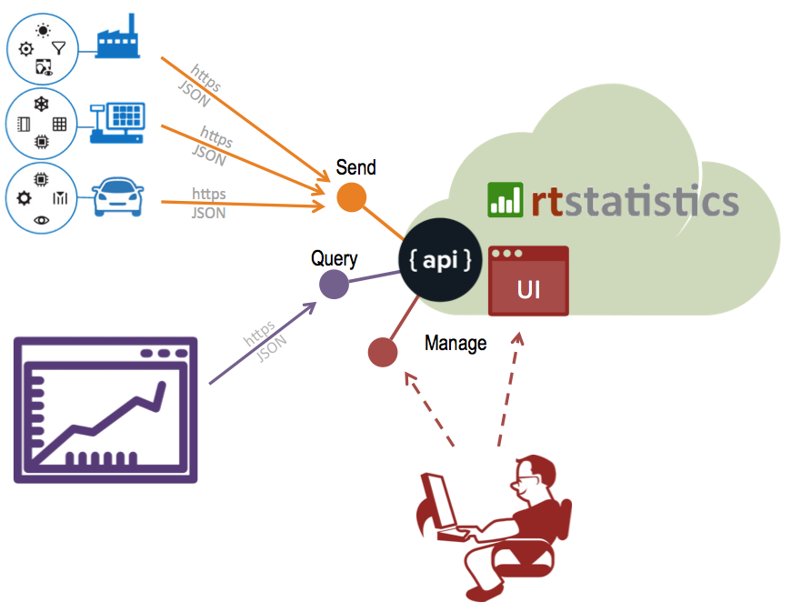
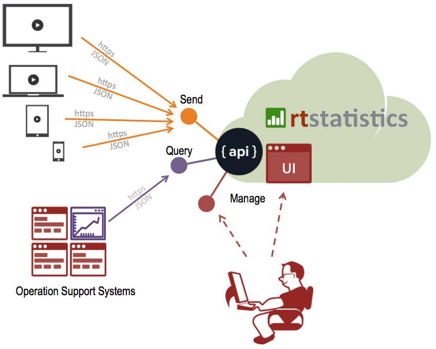
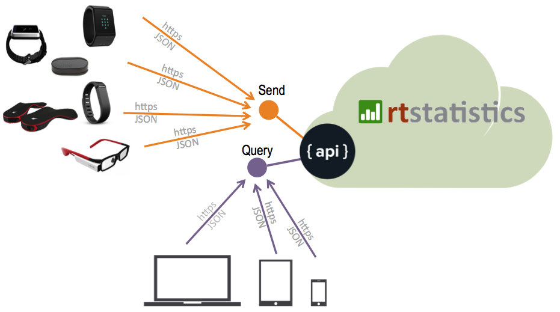
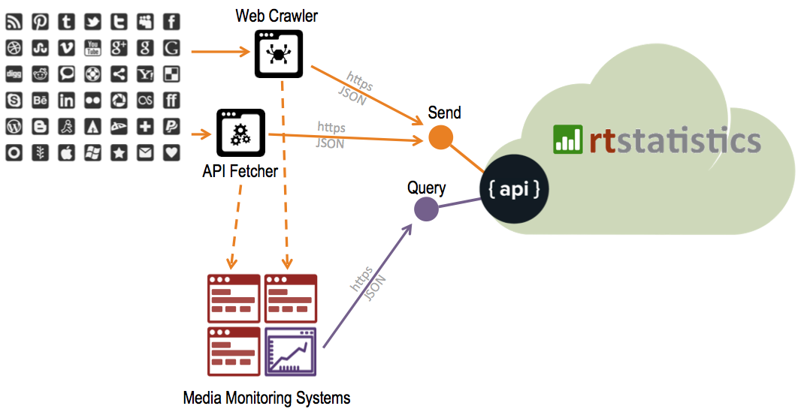

Solutions
The capabilities of providing real-time statistics and instant query response time can be used in many areas, helping businesses to offer end users unmatched real-time and responsive experiences.
Real-time statistics for IoT
Internet of Things has several common characters: large number of devices, high frequency and real time data generation. Traditional IT systems can’t do real time data collection and processing, without which the use cases of IoT get limited. Key features of rtstatistics.com align very well with the characteristics of IoT. That makes it the perfect back-end for IoT applications.
rtstatistics.com is a cloud service that exposes real-time statistics capabilities through easy to use REST APIs. IoT devices can push JSON formatted data over HTTPS to rtstatistics.com without the need of additional SDK. By utilizing latest cloud technologies, rtstatistics.com can scale up to cope with any practical work load. No matter how many IoT devices you have, rtstatistics.com always allows you to send your data to it in real-time, allows you to query statistics in real-time as well.

Real-time statistics for online video services
Nowadays, the media industry is already a data driven industry. We can help you move from just data driven to real-time data driven.
By utilizing real-time statistics capabilities that rtstatistics.com provides, you can collect and aggregate all kinds of player events in real-time, therefore you can have real time statistical view of your audiences for guiding your operations.

Data collection and analytics for wearable health monitors
From pedometers, heart rate monitors to sleep trackers, wearable monitors have become mainstream. They all collect real time data from people. The rate of data collection is becoming more and more frequent, coupled with increasing customer base, it is increasingly challenging for device vendors to build a back-end for data collection, processing, and presentation. rtstatistics.com is capable to collection data from massive amount of devices in real-time, create statistics on those data, and instantly return statistics results according to query criteria. By embedding rtstatistics.com’s services, device vendors can have a high performance and highly scalable back-end with a very little cost.

Real-time online media monitoring
As social network getting more and more popular, the velocity of information propagation is increasing dramatically. On twitter, facebook, etc., a topic can become viral in minutes. For any business that want to react quickly to what people are talking about, the first step is to monitor what people are talking about in a real-time manner. rtstatistics.com provides real-time statistics capabilities which are essential for having a real-time view of what is currently going on.
Check out this live demo with real world data and experience what we mean by “real-time”: Live statistics: Trump vs. Clinton according to comments in “askreddit”.

Real-time usage monitoring for mobile apps
For apps installed in smartphones and other devices, traditionally you need to build your own back-end analytics in order to understand how users interact with your apps. This can be a little difficult especially if you want to focus on improving the app itself rather than building supporting systems. You may choose to start with products like Google Analytics but eventually you will need customized analytics. rtstatistics.com is the perfect choice for you if you need something that Google Analytics cannot provide while don’t want to build your own analytics from scratch.
rtstatistics.com is a cloud service that exposes real-time statistics capabilities through easy to use REST APIs. From mobile apps JSON formatted data can be sent over HTTPS to rtstatistics.com without the need of additional SDK. Then, you can define fields and statistics according to you own needs, and use the query API to get statistics by criteria.
Check out this live demo with real world data: Live statistics: Usage of mobile app “LibBooks”.
Real-time dashboards and reports for enterprises
BI and data warehousing have been implemented in lots of enterprises. They are complex and expensive. But can they provide real-time dashboards or reports? No. And when people tell you that something can be “near real-time”, they actually mean tens of minutes or even hours. What if you can get real real-time while your competitors still live in “near real-time”? Sounds interesting, right? You just need to send some of your data to rtstatistics.com in real-time, define your statistics, and then send queries to rtstatistics.com from your dashboards, your dashboards will then be real-time.
If you have any questions or suggestions, please send email to info@rtstatistics.com.